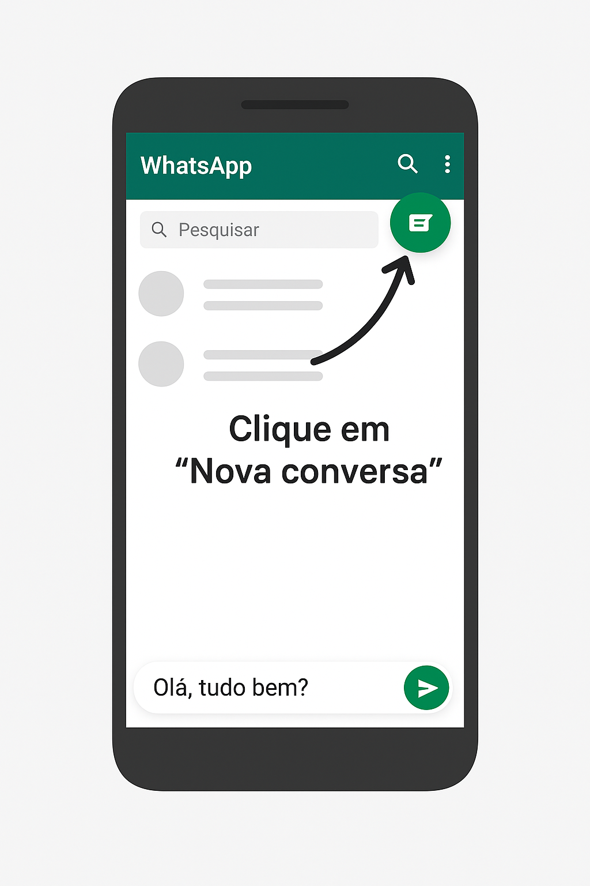

Como usar o WhatsApp
O WhatsApp é um aplicativo de mensagens que permite se comunicar com pessoas do mundo todo. Você pode enviar mensagens de texto, fotos, vídeos, fazer chamadas de voz e vídeo facilmente.
1. Abra a Play Store
(Loja oficial de aplicativos confiáveis, vem instalado por padrão em todo celular Android).
2. Procure por "WhatsApp" na barra de pesquisa.
3. Clique em "Instalar".
4. Aguarde a instalação terminar e abra o app.
5. Siga as instruções para configurar seu número de telefone.
Pronto! Agora, qualquer pessoa que tenha o seu número poderá enviar mensagens para você pelo WhatsApp. Para conversar com outras pessoas, basta adicionar o número delas à sua lista de contatos, e elas aparecerão no aplicativo para que você possa enviar mensagens.
